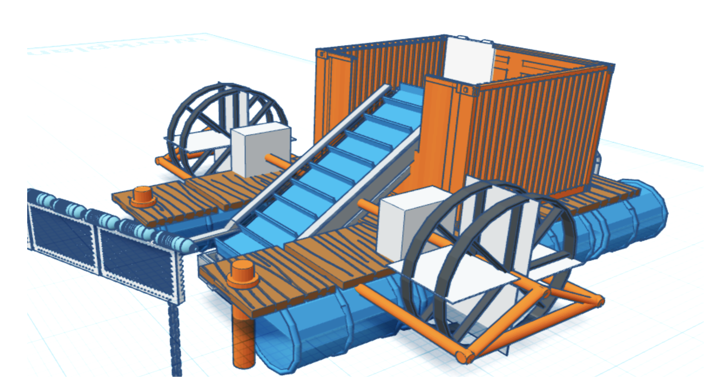

<div class="textcontainer">
<br></br>
<h3>Week 1: Final Project Proposal</h3>
<p style="font-size: 20px;"><a href="#Idea1" style="all:unset; text-decoration: underline; color: #d9be98;">Go to Idea 1</a></p>
<p style="font-size: 20px;"><a href="#Idea2" style="all:unset; text-decoration: underline; color: #d9be98;">Go to Idea 2</a></p>
<p style="font-size: 20px;"><a href="#Idea3" style="all:unset; text-decoration: underline; color: #d9be98;">Go to Idea 3</a></p>
<h4 style="text-align: center;" id="Idea1">Idea 1: River-waste collecting machine</h4>
<div style="text-align: center;">

</div><br>
<p>This robot's purpose is to remove floating macro-waste from rivers. It consists of a float, which is kept stationary relative to the river bank by anchors; 2 water wheels attached to a conveyor system that lifts the trash out of the water; a collection tin; and a pair of buoys/rotors that direct trash towards the robot's mouth. My parallel aim is to up-cycle waste materials to create the robot's frame and floats to enhance its sustainability. Additionally, I'd like to integrate microcontrollers into the system by installing sensors (IR beam or load cell) to detect when the collection bin is full, pause the conveyor, and send a text-message alert. <br></br>
This is the project idea I'm most interested in, because it solves a problem which I've witnessed continuously back home in India. Every day, tonnes of household waste are thrown into my local river - the Ghaggar-Hakra. This has caused BOD levels to rise up to 240mg/L, and resulted in widespread cancer, dysentery, and hepatitis in nearby rural communities. For 5 years, I led an initiative named Ghaggar Toli to clean up waste in and around the river. However, it's impossible to keep up with the sheer influx, and I wanted to automate the cleanup process.</p>
<h4 style="text-align: center;" id="Idea2">Idea 2 : Self-sorting wastebin</h4>
<div style="text-align: center;">
</div><br>
<p> This robot's aim is to sort household waste automatically into various categories: organic, metal, plastic, and paper/cardboard. I'm still not exactly sure how each item will be tested; however, a few possibilities could be - metal items detecting using a conductivity or metal sensor, organic waste detecting through moisture and gas sensors, plastic detecting using an IR sensor to measure reflectivity, and paper detecting through capacitive touch, as it has a lower dielectric constant than plastic. Alternatively, all 4 could be detected using a camera (like raspberry pi) and a trained machine learning model. The ultimate aim is for the system to identify and differentiate different waste types, then sort them using a tipping plate/slide into the appropriate quadrant of a 4-container bin. </p>
<h4 style="text-align: center;" id="Idea3">Idea 3 : River-waste collecting machine</h4>
<div style="text-align: center;">
</div><br>
<p>This robot's aim is to automatically tune stringed instruments by adjusting the tension of each string. This tuner attaches to the instrument's tuning peg using a cube-shaped clamp with a hole that fits over the shaft. A small motor inside the clamp rotates the peg clockwise or counterclockwise to adjust string tension. A built-in microphone or vibration sensor detects the string's pitch in real time. The motor turns the peg until the detected pitch matches the target frequency, then stops. The system repeats this process for each string, until the guitar is tuned!</p>
</div>